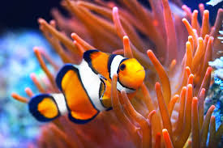

CLOWN ANEMONEFISH FACTS

Physical Traits
Orange body with white stripes
Small rounded fins
About 3–4 inches long
Habitat
Warm, shallow coral reefs
Indo-Pacific region
Lives inside sea anemones for protection

Diet
Algae
Small crustaceans
Plankton and leftover anemone food